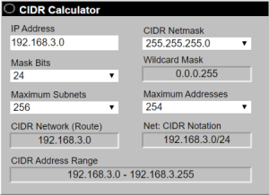

Router & routing table
Router allow to forward IP datagrams from one network to another.
Routing protocols are used to determine the best path to reach a network
A router has different interfaces, to know to which one has to forward a received packet, the router inspects for the destination address in the packet and then perform a lookup in the
routing table and search for an IP match.
example of a routing table:
| interface of the router | IP of the destination network of the packet | Netmask of the destination network |
|---|
| 1 | 228.84.0.0 | 255.255.0.0 |
| 2 | 192.168.3.0 | 255.255.255.0 |
| 3 | 0.0.0.0 | 0.0.0.0 |
•
Interface 1 is used to forward the packets to 228.84.0.0/16
•
Interface 2 is used to forward the packets to 192.168.3.0/24
•
Interface 3 is used as the default route for packets whose destination does not match any other entry in the table
- For example if a packet transit from the router of the example with destination IP:
192.168.3.8, this IP reside in the 192.168.3.0/24 network(as we see in the below image) and so the packet is routed through interface 2
- If a packet transit from the router of the example with destination IP:
78.33.57.5, this IP does not reside in no one of the network listed in the routing table and so is routed to the default route 0.0.0.0 through interface 3
-